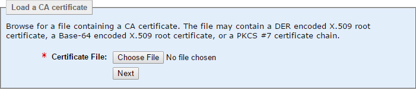
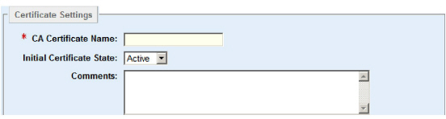
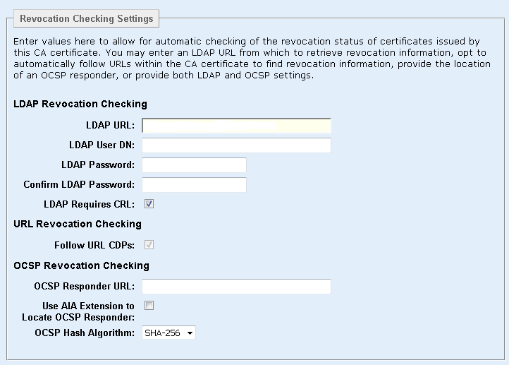

|
IdentityGuard Server 12.0 Administration Guide |
|
IdentityGuard Server 12.0 Administration Guide |
You can load CA certificates into Entrust IdentityGuard. CA certificates follow these rules:
● The name of a CA certificate must be case-insensitive and unique across all CA certificates. The name must be between 1 and 255 characters (with leading and trailing white spaces removed) and cannot contain the / character.
● The issuer DN and serial number of a CA certificate must be unique across all CA certificates; that is, a given CA certificate can only be imported into Entrust IdentityGuard once.
● When validating user certificates, the corresponding CA certificate must be in the active state for validation to succeed. You can invalidate all of its user certificates without deleting the CA certificate from the system by changing the CA certificate state to inactive.
● When registering a CA certificate, all of the CAs in the certificate chain must have the keySigning key usage bit set. The certificates must also be in their validity period. Subordinate CAs must also contain the basicConstraints=true extension.
● When user certificates are assigned, they will link to a registered CA certificate if they were issued by one of the registered CA certificates. A CA certificate cannot be deleted if any user certificates issued by that CA certificate exist.
1. Log in to the Entrust IdentityGuard Administration interface as the administrator.
 On the
Windows computer where Entrust IdentityGuard is installed
On the
Windows computer where Entrust IdentityGuard is installed
2. Click Certificates.
3. Click the List Unmanaged CA Certificates tab.
4. Click Load CA Certificate.
The Load a CA certificate screen appears.

5. Browse to the CA certificate file in the file system, and then click Next.
The Verify Certificate Details screen appears. The top half of the screen shows detailed information about the certificate.
The bottom half, Certificate Settings, allows you to set the certificate name and initial state.

Note: The CA certificate name is case-insensitive, and it must be unique among all CA certificates across Entrust IdentityGuard. The name must be between 1 and 255 characters long, and it cannot contain the backslash (\) character.
6. In Certificate Name, enter a name to identify this CA certificate
7. Initial Certificate State is set to Active by default. You can set it to Inactive if you want to prevent associated users from authenticating for now.
8. You can change the certificate from Active to Inactive or from Inactive to Active. Select the desired state from the State drop-down menu.
Setting the CA certificate to the inactive state has the same effect as revoking the certificate—all of the user certificates issued by the CA can no longer be used for authentication. Unlike revoking the certificate, however, setting the CA certificate to inactive can be reversed by setting it back to active.
9. Next, you set up the revocation checking settings. See the table in Configure revocation checking for various CAs for details about customizing these fields for your CA.
If you leave all of these fields blank, there will be no revocation checking.

10. If you are using an LDAP server, enter the URL that points to the location of the Certification Distribution Point (CDP) in LDAP URL.
Note: The host name in the LDAPS URL must match the host name in the certificate.
11. If you use an LDAP URL, enter the applicable user DN in the LDAP User DN field.
12. If you do not want to authenticate anonymously to the LDAP server, enter an LDAP user DN in LDAP User DN.
Also enter the password in New LDAP Password, and confirm the password by entering it again in the Confirm New LDAP Password field.
13. Leave the default setting for LDAP Requires CRL. For most implementations, the default setting, enabled, is appropriate.
By default, when an LDAP URL is specified for a CA, Entrust IdentityGuard expects that CRLs will be present in the LDAP directory. However, the CA might be configured such that CRLs are not published to the directory and the reason the LDAP URL is configured for the CA is so that user encryption certificates can be found as part of derived credential activation. In this scenario, clear the LDAP Requires CRL option so that Entrust IdentityGuard will not expect to find CRLs in the LDAP directory. For more information about derived mobile smart credentials, see the Entrust IdentityGuard Smart Credentials Guide.
14. Select Follow URL CDPs if you are using Entrust Managed Services, Entrust Certificate Services, or a Microsoft CA, if the CA is configured for URL CDPs.
15. Enter an OCSP Responder URL if supported by your CA.
16. Select Use AIA Extension to Locate OCSP Responder if you are using an Entrust Managed Services CA or an Entrust Certificate Services CA.
17. Optional. Enter text in the Comments field.
18. Click Load CA Certificate.